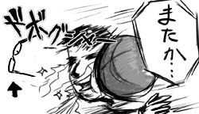
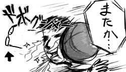
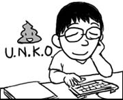

実験室で、テストチームの人たちに声をかけられ、会社帰りに公園でバスケをやることに。アメリカっぽいね！ハハハ。
いやもう全然体が動かずにすぐにヘロヘロになったのは、予想通りです。一番デカい(身長も体重も)Galyは、何かある度に「俺の乳首さわるなって！」と叫ぶのでおもしろい。
そして、また眼鏡が吹っ飛びました。フレームも大歪み！
…必死に手で曲げて直しましたよ。ええ。
実験室で、テストチームの人たちに声をかけられ、会社帰りに公園でバスケをやることに。アメリカっぽいね！ハハハ。
いやもう全然体が動かずにすぐにヘロヘロになったのは、予想通りです。一番デカい(身長も体重も)Galyは、何かある度に「俺の乳首さわるなって！」と叫ぶのでおもしろい。
そして、また眼鏡が吹っ飛びました。フレームも大歪み！
…必死に手で曲げて直しましたよ。ええ。
同僚にテストデータを渡した。でも、忘れてた。
自分がテストした時に、エラーとなるようにデータを書き換えていたことを。そして、その値が「Unko」だったってことを。
「ユー、エヌ、ケー、オーって何？」って聞かれた。
答えられなかった。このいくじなしめ。
ちなみにエラーとなるデータということで、Unknownに似たようなものだという風に勘違いしてくれたぽいです。なるほどね！
今日はインターンの学生さんが出社最終日ということでグループランチでした。
食事自体は無難に終わったのですが、オフィスに帰る途中、後部座席に座っていたMarkが「俺の友達にさ、日本のアダルトビデオを3000本も持ってて、それで日本語を勉強してる奴がいるんだよ」と話しかけてきました。何を勉強しとん！と心の中でツッコミます。
「だからさ、Takuのお気に入りの女優がいたらいつでも聞いてくれよ」と言われました。そんなこと言われても！いつもの曖昧な笑みで誤魔化します。なんだろう、この大人の階段を全速力で下っているような感覚は。
ちなみにDuyはこの話に興味津々だったことを付け加えておきます。